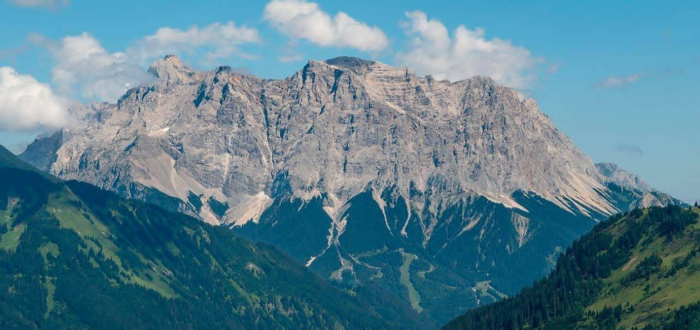

Zugspitze (ซุกสปิตเซ) ยอดเขาที่สูงที่สุดในเยอรมนี (\(2,962\) เมตร) ตั้งอยู่ใกล้เมือง Garmisch-Partenkirchen ติดชายแดนออสเตรีย ไฮไลท์คือการนั่งกระเช้าไฟฟ้าที่เร็วที่สุดในโลกชมวิว 360 องศาเห็น 4 ประเทศ, เล่นหิมะบนยอดตลอดปี (มีลานสกีในฤดูหนาว), แวะถ่ายรูปที่โบสถ์สูงที่สุด, เดินทางสะดวกด้วยรถไฟฟันเฟืองจากทะเลสาบ Eibsee ที่เที่ยวและกิจกรรมไฮไลท์บนยอดเขา Zugspitze จุดชมวิวพาโนรามา 360 องศา: มองเห็นยอดเขากว่า 400 ยอดในเยอรมนี ออสเตรีย อิตาลี และสวิตเซอร์แลนด์ พร้อมสัญลักษณ์ไม้กางเขนสีทองกระเช้าลอยฟ้า Seilbahn Zugspitze: กระเช้าทำลายสถิติโลกที่พาขึ้นสู่ยอดเขาภายในเวลาอันรวดเร็ว ผ่านวิวทะเลสาบ Eibsee จากมุมสูงธารน้ำแข็ง Zugspitzplatt (Glacier): ลานหิมะบนยอดเขาที่สามารถเล่นเลื่อนหิมะได้แม้ในฤดูร้อน และเป็นสกีรีสอร์ทชั้นนำในช่วงฤดูหนาวร้านอาหารและบาร์ที่สูงที่สุด: จิบเบียร์หรือทานอาหารที่ร้านอาหารบนยอดเขาที่สูงที่สุดในเยอรมนีโบสถ์ที่สูงที่สุด (Chapel): โบสถ์สวยงามที่ตั้งอยู่บนยอดเขาสูงเดินป่า (Hiking): เส้นทางเดินชมธรรมชาติและวิวภูเขาในฤดูร้อน สถานที่ท่องเที่ยวใกล้เคียง ทะเลสาบไอบ์ซี (Eibsee): ทะเลสาบสีฟ้าครามงดงามดุจภาพวาดที่ตั้งอยู่ฐานของภูเขา เหมาะสำหรับเดินเล่นรอบทะเลสาบเมือง Garmisch-Partenkirchen: เมืองสกีรีสอร์ทชื่อดัง ที่มีบ้านเรือนเพ้นท์ลายโบราณสวยงามปราสาทนอยชวานสไตน์ (Neuschwanstein Castle): อยู่ห่างออกไปประมาณ 47 กิโลเมตร เคล็ดลับการท่องเที่ยว การเดินทาง: จากมิวนิกให้นั่งรถไฟมาที่สถานี Garmisch-Partenkirchen แล้วต่อรถไฟฟันเฟือง (Zugspitzbahn) หรือนั่งรถบัส/ขับรถไปลงที่สถานีเคเบิลคาร์ Eibseeสภาพอากาศ: ตรวจสอบสภาพอากาศและ Webcam แบบเรียลไทม์ผ่าน เว็บไซต์ทางการ ก่อนขึ้น เพราะบนยอดเขาอากาศเปลี่ยนแปลงเร็วและหนาวเย็นตลอดปี